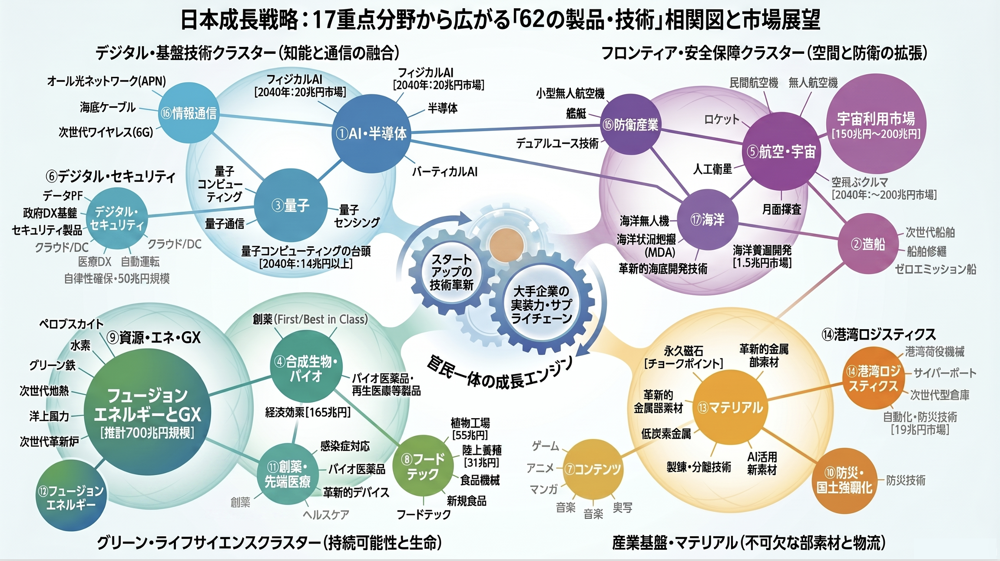

地方の課題解決を事業機会へ変換する
政府の「地域未来構想」
動向追跡・事業化ロードマップ
政府は「地方創生」のもと、地域未来構想20分野と横断的施策で議論を加速し、社会実装を目指す。 複雑な関係会議体の議論を時系列で追跡し、自社の地方展開ビジネスへと直結させるための分析フェーズを視覚化。

クリックで拡大
データ更新日: 取得中...
本部長：内閣総理大臣
地域未来戦略本部
第1段階：2026年7月21日「地域未来戦略」閣議決定
議長：内閣府特命担当大臣（地方創生）
地域未来戦略に関する関係副大臣等会議
社会実装分野
社会実装分野 3つの計画
クリックして一覧を表示
横断的支援策
横断的支援策 4つの柱
クリックして一覧を表示
地方展開に向けた事業化アプローチ
1
見つける
Targeting & Discovery
自社にとって重要な地方創生関連の会議を特定し、初期の動向とプレイヤーを把握するフェーズ。
- 社会実装分野（3計画）・横断的支援策（4分野）から選定
- 会議メンバー（自治体/企業）の特定
地域未来構想レポート
2
追跡する
Chronological Tracking
関係副大臣等会議等の内容を時系列で追い、実装されるモデル事業等の方向性を予測するフェーズ。
- 提供資料（第5回会議資料等）のモニタリング
- 構成員（自治体）の首長等の発言把握
3
アクションを見つける
Execute & Expand
具体的な交付金事業や特区連携の条件を分析し、自社の地方展開戦略へと落とし込むフェーズ。
モデル事業参画時の重要確認事項
予算規模（地方創生拠点整備交付金等）
連携先自治体（地域産業クラスター形成等）
対象領域（関連する20分野）
各社の判断により実行
各分野の分析データ・事業機会の具体例
会議情報を時系列で追うことで、情報を先取りし、受動的な情報収集から能動的な地方展開・事業開発を目指す。
データアクセス日: